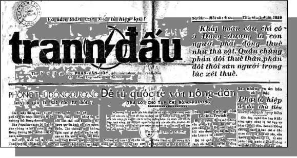

CHƯƠNG XIII
Chương trình tuyển cử chung do các phái cấp tiến, xã hội và cộng sản thảo ra được ấn hành ngày 10 tháng giêng năm 1936. Nó làm cho Phái cực hữu nổi giận. Maurras lên tiếng chửi thậm tệ hơn: ‘’Léon Blum? một kẻ phải đem xử bắn nhưng bắn từ sau lưng, cái cặn bã của nhân loại đáng được đối xử như thế’’. Ngày 13 tháng 2, Blum bị một nhóm Bảo Hoàng và bọn Cagoulards cực hữu đánh ở Đại Lộ Saint Germain, ông bị thương. Ngày 16, đảng viên cấp tiến, xã hội và cộng sản tập hợp đông đảo biểu tình phản đối, kéo đi từ lăng tẩm Panthéon tới quảng trường Nation.
Ngày 3 tháng 5 năm 1936, trong cuộc tuyển cử lập pháp ba đảng liên minh chiếm đại đa số. Đảng Xã Hội 147 đại biểu, Cấp Tiến 116, Cộng Sản 72 và các nhóm Xã Hội Cộng Hòa 41, tổng cộng 376 đại biểu, còn phái ‘’quốc gia’’ chỉ có 220. Lúc ấy trong xứ gần một triệu người thất nghiệp, số thu nhập của người ở châu thành giảm độ 15% từ 1930.
Ngày 4 tháng 6, chính phủ đầu tiên của Mặt Trận Bình Dân với Léon Blum làm Thủ Tướng đã thay thế nội các Albert Sarraut. Đảng cộng sản Pháp từ chối tham gia. Cấp Tiến và Xã Hội chia nhau các Bộ (có hai đảng viên xã hội ở Bộ Thuộc Địa và Bộ Nội Vụ là Moutet và Salengro).
Ngay khi biết tin Đảng Xã Hội thắng to trong cuộc tuyển cử thợ thuyền bắt đầu sáp nhập sân khấu chính trị để bênh vực quyền lợi riêng của mình. Ngày 11 tháng 5, họ bắt đầu chiếm nhà máy chỗ họ làm, qua ngày 25 phong trào đình công chiếm xưởng lan rộng khắp nơi. Đến cuối tháng cótới 100.000 công nhân chiếm nhà máy. Các dịch vụ y tế và an toàn được đảm bảo.
Ngày 6 tháng 6, đối mặt với một Nghị Viện mà trong đó toàn thể đại biểu phái hữu rầm rộ la ó hết cỡ, Thủ Tướng Léon Blum tuyên bố sẽ không sử dụng cảnh sát lẫn quân đội để đàn áp thợ thuyền bãi công. Ngày chủ nhật 7, ông triệu tập cả giới chủ và đại diện Tổng Liên Đoàn Lao Động họp ở Điện Matignon, Văn Phòng Thủ Tướng. Đến 1 giờ sáng ngày 8, giới chủ cùng nghiệp đoàn lao động ký một thỏa ước trong đó bao gồm quyền tự do nghiệp đoàn, những hợp đồng lao động tập thể, và chủ công nhận các đại biểu công nhân được bầu ra, những ngày nghỉ có trả lương và tăng mức lương từ 7 lên 15%. Ngày 11, L. Blum trình bày trước Nghị Viện những dự án luật cấp bách để phê chuẩn các thỏa ước: Quy ước tập thể, những ngày nghỉ trả lương, tuần làm việc 40 giờ. Một phiếu phản đối hai dự luật trên, 160 phiếu tán thành tuần lễ 40 giờ. Ba dự luật được chấp thuận.
Trong ngành luyện kim, xây dựng, hầm mỏ, các cuộc bãi công tiếp tục với một mầu sắc cách mạng rõ rệt. Bãi công chấm dứt vào ngày 12, sau lời tuyên bố nổi tiếng của Maurice Thorez, lĩnh tụ cộng sản: ‘’Phải biết chấm dứt một cuộc bãi công’’.
Tiếng dội Mặt Trận Bình Dân Pháp chấn động Đông Dương
‘’Cuộc Cách Mạng ở Pháp đã khởi đầu’’, Trotski tuyên bố trên báo Thợ Thuyền Tranh Đấu (Lutte Ouvrière) ở Paris, cơ quan của đảng thợ thuyền quốc tế chủ nghĩa ngày 9 tháng 6.1936. Tờ báo ra, liền bị tịch thâu.
Ngày 11, tại Sài Gòn, nhóm huy động chánh đoàn cộng sản quốc tế chủ nghĩa, bí mật thành lập một năm trước đó, bị bắt. Thế nhưng trong đêm khuya, vô số truyền đơn bằng chữ Quốc Ngữ rải khắp thành phố kêu gọi dân chúng thành lập ủy ban hành động nhằm phát động ‘’cuộc tổng bãi công hưởng ứng giai cấp vô sản Pháp’’:
Anh em thợ thuyền dân cày và binh lính Đông Dương!
Cách mạng vô sản ở Pháp đang sôi nổi dữ dội: Mấy trăm ngàn thợ đã đình công, chiếm lò máy và đang dự bị tổng đình công. Chúng ta hãy đứng lên. Trong mỗi lò máy, mỗi sản nghiệp, mỗi làng, mỗi tỉnh, anh em thợ thuyền và dân cày cử đại biểu.Thành lập ủy ban hành động khắp nơi. Liên hiệp nhau lại; Đứng lên tổng đình công hưởng ứng giai cấp vô sản Pháp!
Đả đảo đế quốc Pháp!
Đông Dương hoàn toàn độc lập!
Tịch thâu ruộng đất của địa chủ giao lại dân cày!
Cách mạng vô sản Pháp, Đông Dương muôn năm!
Liên ủy thợ-thuyền liên-hiệp
Chánh đoàn công sản quốc tế chủ nghĩa
(phải tán thành Đệ Tứ Quốc Tế)(110)
Nhiều truyền đơn nội dung tương tự còn xuất hiện vài đêm sau nữa trong thành phố.
Đào Hưng Long, thợ vẽ kẻ biển, bị bắt tại nhà cùng với các bạn đang làm việc. Hồ Hữu Tường bị bắt ngày 16. Tất cả đều bị mật thám tra tấn. Các luật sư của họ đệ đơn kiện bọn tra tấn. Tờ Thư Tín Đông Dương ngày 23 tháng 6 đăng đơn ấy trong bài ‘’Vụ phòng chưởng lý truy tố Lư Sanh Hạnh và các bị cáo khác’’. Tờ Tranh Đấu ngày 24 cũng đăng theo.
Ngày 31 tháng 8, Tòa Tiểu Hình kết án ‘’tham gia vào hội kín và mưu toan phá rối trị an’’ Lư Sanh Hạnh và Ngô Văn Xuyết bị kêu án 18 tháng và 1 năm tù, Giáo Viên Trịnh Văn Lầu và Thư Ký Ngô Chỉnh Phến 8 tháng tù, Thợ In Vạn Văn Ký, Học Sinh Phạm Văn Muồi và Võ Văn Dơn 6 tháng tù treo, Thợ Máy Văn Văn Ba tha bổng.
Hồ Hữu Tường và Đào Hưng Long được thả rồi vì thiếu chứng cớ.
Về phần đảng cộng sản Đông Dương, do Hà huy Tập lãnh đạo bí mật khôi phục lại, sẽ theo gót đảng cộng sản Pháp. Trong chương trình đảng cộng sản Đông Dương không còn thấy nói đến đấu tranh giải phóng dân tộc cùng cải cách ruộng đất. Trong diễn văn không còn thấy có - trừ đôi chỗ còn nhắc nhở lại cho đến tháng 3 năm 1937 - những từ ngữ về đấu tranh giai cấp và đế quốc chủ nghĩa Pháp, thậm chí còn yêu cầu những tổ chức bí mật (như công hội, hội nông dân, đoàn thanh niên cộng sản) tự giải tán. Cũng như đảng cộng sản Pháp, đảng cộng sản Đông Dương thỏa thuận với chính phủ Mặt Trận Bình Dân, chính sách Blum-Moutet là muốn ‘’canh tân hệ thống chế độ thuộc địa’’ chứ không phải là từ bỏ sự thống trị đế quốc chủ nghĩa ở Đông Dương.
Tiến tới Đông Dương Đại Hội một‘’Mặt Trận Bình Dân’’ thuộc địa
Chương trình của Mặt Trận Bình Dân Pháp bao gồm việc gửi một ủy ban điều tra của nghị viện để tìm hiểu nguyện vọng các dân tộc thuộc địa. Từ cuối tháng 5, ở Sài Gòn, ngay trước khi Marius Moutet lãnh chức Bộ Trưởng ký vào đề án ngày 1 tháng 8, phái Lập Hiến đã chuẩn bị một ủy ban đón tiếp gồm những nhà tư sản có danh tiếng.
Ngày 27 tháng 5, nhóm Tranh Đấu với Nguyễn An Ninh đối chọi phái Lập Hiến, đưa ra ý kiến rộng rãi hơn, dự định thành lập một Đông Dương Đại Hội để tập họp bên cạnh giới tư sản và trí thức những kẻ mà người ta luôn luôn khóa mồm không cho lên tiếng. Ngày 29 tháng 7, nhóm Tranh Đấu phát hành một lời kêu gọi, ký tên Nguyễn An Ninh, ‘’mọi người thuộc tất cả các khuynh hướng tới triệu tập Đông Dương Đại Hội, nhằm hội thảo một tập thỉnh nguyện trình lên chính phủ mẫu quốc và nhằm thành lập một Ủy ban triệu tập Đông Dương Đại Hội’’. Các báo chí có nội dung chính trị tương tự như báo Tranh Đấu cũng tung ra những lời kêu gọi đó, như báo Lao Động (Le Travail) ở Bắc Kỳ, Nhành Lúa ở Trung Kỳ.
Trong một truyền đơn hướng về quảng đại quần chúng, nhóm Tranh Đấu nêu rõ hơn:
Trong các nhà máy, các nông trường, các thành phố, các làng mạc, các bạn hãy thành lập những ủy ban hành động gồm từ 5 đến 7 người. Nhiệm vụ của các ủy ban hành động là gì? Xác định cho quần chúng hiểu rõ những nguyện vọng của họ, lựa chọn các đại biểu của mình đi dự Đông Dương Đại Hội.
Ủy ban hành động nhóm Tranh Đấu thành lập ngày 5 tháng 8.1936 phát hành hai tập sách hướng dẫn khác nhau: Một là Cách làm việc của một ủy ban hành động, của Đào Hưng Long, chỉ bảo nhất là thợ thuyền và nông dân phát biểu nguyện vọng giai cấp mình; còn tập kia tựa đề Cho được thực hiện Đông Dương Đại Hội, tác giả Nguyễn Văn Tạo tuyên bố tán thành việc đoàn kết dân tộc: ‘’Những người lao động phải cùng đi chung với những nhà tư sản để đảm bảo Đông Dương Đại Hội thành công’’.
Phái Lập Hiến cũng tán đồng ý nghĩ về một cuộc Đại Hội như thế. Ngày 13 tháng 8, tại trụ sở báo Việt Nam của nhóm Lập Hiến, 300 người tham dự bầu ra 19 thành viên ủy ban triệu tập, chủ yếu gồm trí thức và tư sản, chỉ có hai người thuộc giới lao động (Đào Hưng Long và Nguyễn Thị Lựu). Được mở rộng vào ngày 21, ủy ban này quyết định là các đại biểu của giới cần lao không thể vượt một phần tư số người tham dự Đại Hội. Tuy nhiên ủy ban này cũng chấp nhận việc thành lập các ủy ban hành động (dưới 20 người để được hợp pháp) do nhóm Tranh Đấu đề nghị. Bảy ban phụ trách được giao trách nhiệm tập hợp các bản thỉnh nguyện. Nguyễn An Ninh cùng một số người chịu trách nhiệm về các vấn đề hành chính, nông dân và nông nghiệp; Hồ Hữu Tường về vấn đề kinh tế tài chính; Phan Văn Hùm về vấn đề y tế vàcứu tế xã hội; Trần Văn Thạch về vấn đề học vấn và giáo dục; Tạ Thu Thâu, Đào Hưng Long và Trịnh Hưng Ngẫu về vấn đề lập pháp cho công nhân; Nguyễn Văn Tạo và 5 người lập hiến về vấn đề yêu sách chính trị.
Cuộc cổ động tuyên truyền cho Đông Dương Đại Hội phát khởi, hàng ngàn hàng ngàn truyền đơn phát rải khắp nơi. Quần chúng nhiệt tình sôi nổi dâng lên như ngọn thủy triều, và trong một trật tự đáng chú ý.
Tuy vậy, chính quyền thực dân đã hoảng sợ và báo động cho Paris; ngày 8 tháng 9, Tổng Trưởng Bộ Thuộc Địa Moutet ra lệnh cấm ‘’ tập họp ở Sài Gòn một đại hội gồm hàng ngàn người vì đó có thể sinh ra biến loạn’’.
Ủy ban hành động, mầm mống Sô-viết nhân dân
Ủy ban hành động đột khởi nhanh như chớp nhoáng. Ngày 30 tháng 9 năm 1936, Sở Mật Thám ước tính phỏng 600 ở Nam Kỳ (trong đó 285 là hợp pháp, còn bao nhiêu đều bí mật). Có khoảng 200 Ủy ban hành động chịu ảnh hưởng trực tiếp của nhóm Tranh Đấu. Trong khu vực Sài Gòn-Chợ Lớn, họ tổ chức những Ủy ban hành động ở Công ty xe điện Pháp, nhà máy thuốc lá COFAT, nhà máy rượu Bình Tây, trạm dầu xăng Nhà Bè, đường sắt, nhà in, trong giới xe thổ mộ Tân Sơn Nhất...Phần lớn các ủy ban hành động tại các khu nội thành, đều là công trình của những người xu hướng Trotski đã bị lộ mặt: Nguyễn Văn Số và Đào Hưng Long tại Cầu Ông Lãnh, Chợ Đũi, Cầu Kho, Cầu Muối, Chợ Quán; Hồ Hữu Tường và Ganofsky tại Đakao; Nguyễn Văn Cử và Nguyễn Văn Chuyến hoạt động trong giới học sinh Sài Gòn. Ở vùng nông thôn phần nhiều Ủy ban hành động thuộc ảnh hưởng của những người cộng sản theo Staline, riêng Cà Mau và Giá Ray (Bạc Liêu) do Trần Hải Thoại và Nguyễn Văn Đính chủ động.
Ngày 12 tháng 9, năm người lập hiến, trong đó có Lê Quang Liêm, kẻ tước đoạt ruộng đất nổi danh, tách ra khỏi phong trào, buộc tội nhóm Tranh Đấu là ‘’xúi giục tầng lớp vô sản chống lại những người mà họ gọi là có của’’. Lãnh tụ đoàn chủ tịch Ủy ban triệu tập là Nguyễn Phan Long, Lập Hiến, không đi theo họ, cuộc cổ động triệu tập Đại Hội vẫn tiến triển mạnh hơn.
Ngày 15, Thống Đốc Nam Kỳ Rivoal cấm mọi cuộc hội họp và biểu tình trong lãnh thổ Sài Gòn-Chợ Lớn, nhưng ngày 17 ông ta cho phép Ủy ban nhóm họp để soạn thảo tập đơn thỉnh nguyện.
Chính quyền thực dân nêu ra những vụ rối loạn tưởng tượng để thúcgiục Bộ Trưởng Thuộc Địa ra lịnh đàn áp. Ngày 19, một điện tín của Moutet lộ rõ sự hoảng loạn: ‘’Phải duy trì trật tự bằng mọi biện pháp, hợp thức và hợp pháp (nguyên văn), kể cả truy tố. Trật tự của nước Pháp phải chế ngự trên toàn Đông Dương cũng như ở những nơi khác’’. Những vụ đàn áp trá hình - vì các ủy ban hành động vẫn ở trong vòng hợp pháp - chống lại các ủy ban hành động ngày thêm nhiều. Giới chủ sa thải những công nhân tham gia phong trào, hương chức làng và lính cảnh sát gây phiền nhiễu họ.
Tại Sài Gòn, ngày 21, Trần Văn Thạch bị kết án vì đã nói chuyện tại một cuộc họp ở Tân Định. Ngày 26, 17 nông dân trong ủy ban hành động Bến Lức bị bắt (ngày 3 tháng 10, tòa phạt người tổ chức 3 năm tù: Nguyễn Văn Tiếp - giáo viên bị sa thải, người trước kia, năm 1926, đã xin ở tù thế cho Nguyễn An Ninh; ông già Nguyễn Văn Xuyến, nông dân 18 tháng tù, những người khác bị án treo. Trong các Tỉnh Châu Đốc và Long Xuyên, tên cò Bazin, mật thám nổi tiếng, không ngớt ruồng bắt trấn áp các ủy ban hành động ở nông thôn.
Ngày 27, đến lượt Tạ Thu Thâu và Nguyễn An Ninh vô khám; ngày 3 tháng 10, Nguyễn Văn Tạo vô theo. Những con số tù ghi trên thẻ cây đeo nơi áo có chữ MAP (Maison d'arrêt politique-nhà giam tù chính trị) của ba người là: 3058, 3059, 3088 đã chứng tỏ là qua 5 ngày đã có tới 29 tù chính trị mới bị giam.
Ngày 30 tháng 9, Dương bạch Mai đi Pháp. Nhiệm vụ của anh ta là báo động dân chúng Pháp về cuộc đàn áp ở Đông Dương, và kèo nài làm sao cho Moutet chấp nhận Đông Dương Đại Hội là hợp pháp công khai. Mai dành phần lớn thời giờ đi lại đảng cộng sản Pháp, rốt cuộc chả đạt được điều gì.
Báo Tranh Đấu ngày 1 tháng 10 có tiêu đề: ‘’Những lời tuyên bố của Marius Moutet ngày càng đi ngược với những sự kiện chính trị địa phương’’.
Trong Khám Lớn, ngày 26 tháng 10, Ninh, Tạo và Thâu bắt đầu tuyệt thực làm reo và viết chung một bức thư gửi Léon Blum:
Chúng tôi đang ngồi tù vì đã và đang đứng về phía Mặt Trận Bình Dân. Những sự kiện do đó chúng tôi bị khiển trách một cách chính thức là: Những bài báo của Ninh và Thâu trên tờ Tranh Đấu ngày 24 tháng 9 và tập sách có nhan đề ‘’Đông Dương Đại Hội’’ của Tạo bằng chữ Quốc Ngữ.
Ba hôm sau, tờ Tranh Đấu viết:
Trong tù, chế độ ăn ngủ của họ chẳng khác gì đối với tù thườngphạm. Cũng thùng cơm gạo lức, cũng một cái ca thiếc với đôi đũa tre. Họ ngồi xuống đất mà ăn, họ nằm xuống đất, xin lỗi! họ nằm xuống nền xi măng mà ngủ.
Ngày 2 tháng 11, người ta chở Tạo, Thâu, Ninh vô nhà thương Chợ Quán.
Ngày 3, tờ Thư Tín Đông Dương đăng đoạn văn bỉ ổi sau đây của quan biện lý thông tư các quan tòa vào năm 1931:
Khi sở hành chính giao cho các ông một bị cáo, các ông không cần tìm hiểu xem y có phải là thủ phạm hay không và thả y ra nếu các ông không tìm thấy bằng chứng buộc tội. Bổn phận các ông là phải giữ y lại và tìm ra những chứng cớ buộc tội người bị cáo.
Người ta biết ‘’tìm ra chứng cớ’’ có ý nghĩa gì, khi biện lý cuộc dựa vào Sở Mật Thám để tìm được những ‘’chứng cớ’’, vì mật thám có đủ phương tiện chắc chắn để lấy được những ‘’lời thú tội đột nhiên’’.
Ngày hôm sau, mồng 4, cũng tờ báo trên chủ động gửi một bức điện tín cho Léon Blum, Marius Moutet, và mười ba nhân vật khác trong đó có Andrée Viollis, Louis Roubaud, Gabriel Péri, như sau:
Xin lưu ý vụ bắt bớ các ủy viên Hội Đồng Thành Phố Thâu và Tạo, nhà báo Ninh, bị buộc tội âm mưu khuynh phúc chính phủ vì tổ chức Đại Hội, thu thập đơn yêu sách gửi ủy ban điều tra của nghị viện do Bộ Trưởng công bố. Công chúng Nam Kỳ xúc động sâu sắc.
Cần can thiệp cấp bách.
Ngày 5 tháng 11, Tạo, Thâu, Ninh được ra tù.
Moutet cắn răng trợn mắt nhưng vẫn do dự nhiều. Vào tháng 11 ông ta can thiệp đến Bộ Trưởng Hải Quân, phản đối vụ sa thải bốn công nhân Thủy Binh Xưởng Ba Son vì lý do chính trị, và viết cho Toàn Quyền Sylvestre là phải để cho tự do hội họp nhằm thảo đơn thỉnh nguyện. Nhưng năm tới đây, ông ta lại cấm các ủy ban hành động.
Ngày 1 tháng giêng năm 1937, cựu Bộ Trưởng Justin Godart, Cấp Tiến phái Tả, Đại Biểu Văn Phòng Lao Động Quốc Tế, được giao nhiệm vụ điều tra, cập bến Sài Gòn. Hàng ngàn thợ thuyền và nhân viên biểu tình phấn khởi hô vang: ‘’Tự do dân chủ! Tự do nghiệp đoàn!’’. Qua ngày 15, khi Toàn Quyền Brévié cập bến Sài Gòn, hàng rào cảnh sát chận đứng làn sóng người tràn vào thành phố; hàng ngàn nông dân quanh vùng cũng muốn đề đạt những nguyện vọng của mình. Trên đường đi Hà Nội, hai sứ giả trên cũng gặp những đoàn người như vậy đón tiếp.
Theo lời kêu gọi của báo Tranh Đấu ngày 7 tháng giêng 1937, Ủy ban triệu tập hoạt động lại dưới tên khác, Ủy ban thỉnh nguyện trung ương. Các Ủy ban hành động xuất hiện lại một thời gian ngắn. Ngày 26 tháng 2, Toàn Quyền Brévié ra lệnh cho ‘’những người nhóm Tranh Đấu phải ngừng mọi hoạt động chính trị nếu không sẽ bị trừng phạt’’. Từ ngày 22, cảnh sát hạ tấm biển của Ủy ban thỉnh nguyện trung ương.
Ủy ban hành động bị cấm, rút lui vào bóng tối rồi tiến triển dần lập thành những chi bộ cộng sản xu hướng Staline hoặc cộng sản theo Trotski. Các tổ chức bí mật này sẽ làm nòng cốt phong trào rộng lớn chưa từng thấy, làn sóng bãi công cuồn cuộn lan tràn khắp năm 1937.
Dự án Ủy ban điều tra các thuộc địa do nghị viện cử ra sẽ bị chôn vùi vĩnh viễn tại Thượng Nghị Viện ngày 17 tháng 7 năm 1938, với một chính phủ mới Daladier trong đó phái hữu chiếm ưu thế. Mặt Trận Bình Dân đã thất bại, và khẩu hiệu ‘’bánh mì, hòa bình, tự do’’ không còn xuất hiện trong chương trình nghị sự nữa.
Nhưng rồi chúng ta sẽ bàn trở lại sau.
Chúng ta đã thấy những người xu hướng Trotski hoạt động hợp pháp đã buộc mình phải im tiếng về chính trị trong một mức độ nào đó, vì họ hiệp đồng lập mặt trận chung với những người theo Staline để tái bản tờ Tranh Đấu vào tháng 10 năm 1934. Chúng ta cũng thấy những người xu hướng Trotski bí mật trong Liên minh cộng sản quốc tế chủ nghĩa đã từng tự quyền phê phán như thế nào vào năm 1935, rồi sau đó toàn bộ nòng cốt của Liên minh này đã bị mật thám bắt vào tháng 6 năm 1936, trong những ngày đầu tiên của chính phủ Mặt Trận Bình Dân.
Vào tháng 9 năm 1936, Hồ Hữu Tường công khai đứng ra phê bình, xuất bản tờ tuần báo xu hướng Trotski đầu tiên bằng tiếng Pháp, tờ Chiến Sĩ, một tờ báo lý luận, Đoàn Văn Trương Chủ Nhiệm.
Từ ngày 1 đến 22 tháng 9 năm 1936, qua bốn số báo, tờ Chiến Sĩ kêu gọi công nhân và nông dân hãy cảnh giác đối với giai cấp tư sản, đặt lại vấn đề hợp tác với phái Lập Hiến trong Đại Hội, thực sự là một sự hợp tác giai cấp; tờ báo đăng những bài của Trotski nói cách nào là một mặt trận thống nhất có hiệu quả; tờ báo tố cáo Mặt Trận Bình Dân ở Pháp phản cách mạng, trong đó những người theo xã hội chủ nghĩa trở nên tù nhân của phái tư sản cấp tiến, họ không có khả năng ngăn cản cuộc đàn áp ở Đông Duơng: Mười hai người dân cày cộng sản ở Đức Hòa và bảy thành viêncủa Liên minh cộng sản mới vừa bị kết án tại tòa tiểu hình ngày 6 và 31 tháng 8.1936.
Tờ báo nhắc lại tình thế nghiêm trọng lúc này trên thế giới: Ở Tây Ban NhaTướng phát xít (fascite) Francisco Franco nổi loạn ngày 19 tháng 7 năm 1936, chống lại Mặt Trận Bình Dân bên ấy; chính sách ngoại giao Nga lấn ép nặng nề; ở Moscou, vụ án quái gở đầu tiên ngày 19 tháng 8, bộ máy tư pháp chính trị xử tử những người Bolshevik kỳ cựu đã cùng Lénine huy động Cách Mạng Tháng Mười 1917 như Zinoviev, Kamenev và 14 người khác - khép họ vào tội khủng bố theo phái Trotski - Tổng Biện Lý Vichinsky coi họ là ‘’lũ chó dại’’ và ra lịnh bắn tức khắc sau khi tuyên án.
Các đồng chí xu hướng Trotski trong nhóm Tranh Đấu, ngỡ ngàng không thể hở môi.
Báo Chiến Sĩ gây nên một tình trạng căng thẳng trong nhóm Tranh Đấu, cuối tháng chín đầu tháng 10, tình trạng này càng gay gắt sau khi Tạo, Thâu và Ninh bị bắt. Tờ báo bị cấm. (Nó sẽ tái bản ngày 23 tháng 3 tới 1 tháng 6 năm 1937, từ số 5 đến số 14). Để đối phó lại, Tường tập hợp những chiến sĩ hoạt động hợp pháp trong Nhóm Bolsheviks-Léniniste tán thành Đệ Tứ Quốc Tế, thay cho nhóm Liên minh quá vãng, và giải thích lập trường của họ trong Tạp chí nội bộ ngày 15 tháng 11 năm 1936. Ngày 1 tháng chạp, nhóm phát hành tờ nhật báo Thợ Thuyền Tranh Đấu. Trong số 2 có bài nói với thanh niên vừa nhập ngũ:
Hỡi các bạn chiến binh! Chỉ vài ngày nữa các bạn sẽ đứng dưới cờ. Là dân thuộc địa nước Pháp, người ta sẽ tập các bạn biết sử dụng vũ khí. Đấy Lénine đã nói về vấn đề này: Hãy cầm lấy súng ống và hãy học cách sử dụng súng ống! Người vô sản phải học làm được cái đó, không phải để giết những người vô sản xứkhácbạn của mình, theo lịnh những kẻ thù của xã hội của chúng ta, mà để quay súng chống lại bọn tư sản trong xứ.
Chúng ta đấu tranh để đòi được quyền đọc những tờ báo của thợ thuyền và để thành lập các ủy ban binh lính. Các bạn hãy tập hợp dưới lá cờ đỏ của Đệ Tứ Quốc Tế tiến tới nên chuyên chính vô sản.
Còn về hoạt động thành lập công hội bí mật, phái Bolsheviks-Léniniste từ tháng 11 xuất bản tờ báo Liên Hiệp; dẫn tới việc tổ chức Liên Ủy Thợ Thuyền vào mùa Xuân năm 1937.
Phong trào bãi công đột khởi từ đâu tháng 6 năm 1936
Như một tiếng dội hưởng ứng phong trào chiếm lĩnh nhà máy ở Pháp, lại thêm giá sinh hoạt mỗi ngày một tăng tại thuộc địa, phong trào thợ thuyền và phu phen lại bắt đầu rung chuyển ở Đông Dương.
Tại miền Nam Trung Kỳ, ngày 23 tháng 6, lần đầu tiên hàng trăm thợ thuyền và phu đồn điền cao su Đông Trang (cách Nha Trang 25 km) tiến hành bãi công và tuần hành tới tỉnh lỵ. Sau khi công sứ can thiệp chủ đồn điền nhượng bộ, họ trở lại làm việc.
Tại Nam Kỳ, vào tháng 8, phong trào lại nẩy sinh từ đồn điền trồng lúa: 400 công cấy ở Cần Giuộc (Chợ Lớn) mỗi ngày kiếm được 16 và 12 xu phản đối việc giảm lương xuống 12 và 10 xu; một địa chủ nhỏ đánh đập một vài công cấy và làm tổn thương một công cấy con gái 19 tuổi, bị hương chức làng trừng phạt, bắt làm mười ngày lao dịch.
Tại công trường những người thất nghiệp ở Bạc Liêu (lương công nhật là 20 xu, ban quản trị giữ lại 10 xu để nộp vào thẻ thuế thân và 2 xu cho người tuyển mộ), những người phu ngưng việc rồi kéo nhau đi tới chủ quận để khiếu nại, nhưng không được thỏa mãn điều gì cả.
Ngày 19 tháng 8, 320 phu đồn điền Michelin ở Dầu Tiếng yêu cầu thắng lợi, tên cai vũ phu bị đuổi, gạo ăn được tăng thêm chút ít. Ngày 27, phu đồn điền cao su Quảng Lợi (Thủ Dầu Một) biểu tình, đánh đập tên cai bởi hắn mà một anh cu-li chích mủ tự tử, họ đòi đuổi tên cai đó.

Báo le Militant (Chiến Sĩ)

Sách báo Đệ Tứ Quốc Tế)
Ngày 10 tháng 10, cũng ở Dầu Tiếng, 130 cu-li chích mủ đòi đuổi một tên cai thứ hai và một tên giám thị người Âu đã đánh một người cu-li đến tổn thương; bốn trong số người phản đối bị giam tại khám tối (nhà tù riêng của Michelin) trong 5 ngày. Cũng trong ngày 10 tháng 10, hàng trăm phu đồn điền Bình Trước (Biên Hòa) bãi công.
Tại Bến Củi (Tây Ninh), một người bỏ trốn khỏi Công ty Đồn điền Cao Su Đông Dương bị bắt lại, bị đánh bằng roi rồi đưa đi làm với hai chân mang xích. Ban ngày anh chỉ được một bữa cơm, ban đêm bị giam khám tối. Sau một tuần lễ, ngày 1 tháng 11, anh tự treo cổ. Ngày 2, giới phu ngưng việc, đòi chấm dứt ngược đãi và đòi tăng lương. Có chính quyền can thiệp, họ được thỏa mãn đôi phần, còn tên giám thị sát nhân Schmitz bị kết án 3 tháng tù ngày 26 tháng 12, những án tù treo! Công bộc nào hưởng ưu đãi nấy.
Ngày 15 tháng 11, 400 cu-li và thợ trong xưởng của Tân Mai (thuộc Sở Kỹ Nghệ và Lâm Nghiệp Biên Hòa), quá khốn cùng họ bãi công chiếm xưởng. Đây là lần đầu tiên và rất hiếm có việc chiếm xưởng làm như thế. Ngày 18 chính quyền ra lệnh cấm mọi sự xâm chiếm như vậy, việc vi phạm quyền sở hữu tư bản thiêng liêng bị trừng phạt. Những người bãi công trở lại làm việc ngày 1 tháng chạp sau khi được tăng thêm 10 xu khốn khổ vào lương công nhật.
Giá gạo tăng từ 1,30 đồng lên 2,20 đồng mỗi 30 lít.
Vào tháng 11 và tháng chạp, thợ cưa Hóc Môn rồi thợ cưa Tân An đấu tranh đòi tăng lương; những xưởng nhỏ như xưởng mộc, lò gạch, xưởng xà phòng, cũng rục rịch làm reo.
Cần phải ghi chú ở đây là chính phủ Blum-Moutet đã ra một Sắc Luật ngày 20 tháng 6 buộc mở rộng ở Đông Dương những luật xã hội mới có điều tiết. Đứng trước một giới tư sản thực dân và tư sản địa phương không muốn cải cách, chính quyền địa phương không vội vã gì trong việc lập một dự án để thực thi sắc luật đó. Một ủy ban tư sản (không một đại biểu nào của giới thợ) được giao trách nhiệm nghiên cứu đề tài này. Ngày 1 tháng 9 đề xuất 15 ngày nghỉ được trả lương đối với người ăn lương tháng và 4 ngày đối với người ăn lương công nhật. Ủy ban này tránh xa về ý tưởng về một quy ước tập thể, chỉ giới hạn ở phạm vi đòi giới chủ thực hiện một mức nào đó về giờ làm việc, ấn định mức lương tối thiểu, chấm dứt tiền phạt...Về phía Toàn Quyền lâm thời Sylvestre, sau hai lần bị Bộ Thuộc Địa nhắc nhở, mới ra nghị định ngày 11 tháng 10,ấn định ngày làm việc 10 tiếng, bắt đầu từ 1 tháng 10, rồi 9 tiếng vào năm 1937, 8 tiếng vào năm 1938, hàng tuần người làm mướn được nghỉ một ngày, ít lắm là 24 tiếng liên tiếp. Những ngày nghỉ hàng năm có trả lương là 5 ngày vào năm 1937, 10 ngày vào năm 1938; cấm sử dụng phụ nữ và trẻ em làm ca đêm.
Ở các tỉnh miền Bắc vào tháng 11 năm 1936, nhiều cuộc bãi công lớn nổ ra: 20.000 thợ mỏ Cẩm Phả-Hòn Gai ngưng việc từ ngày 16 đến 28 đòi bọn cai chấm dứt ngược đãi, đấm đá, đánh đập bằng gậy gộc, bằng roi gân bò, và đòi tăng lương từ 18 xu lên 35 xu và từ 27 lên 40 xu. Nhà máy xi măng Hải Phòng cũng đình công với những yêu sách tương tự.
Ở phía Nam, tại Sài Gòn ngày 4 tháng chạp, toàn bộ 1200 thợ và phu ở thủy binh xưởng Ba Son tiến hành bãi công. Họ mới vừa được tin những đại biểu của xưởng chế tạo thủy lôi, ngày 26 tháng 11, đưa đơn yêu sách và giám đốc hứa bảo đảm họ sẽ được thỏa mãn, họ sẽ không bị trừng phạt, nhưng sau đó họ bị phạt tiền và mất việc. Sáng ngày 4, những người bãi công đưa yêu sách đòi phải thu dụng trở lại những người bị đuổi, hủy bỏ các khoản phạt tiền, mức tối thiểu tiền lương công nhật là 1,20 đồng, giờ làm thêm được trả 150%, thi hành các đạo luật lao động được chấp thuận ở Pháp (tuần lễ 40 giờ, mỗi năm được nghỉ 15 ngày có trả lương, trả lương hưu trí) phải được áp dụng tại Sở Ba Son, một xưởng tàu trực thuộc Bộ Hải Quân. Bọn giám đốc chẳng những không trả lời mà còn đe dọa nữa.
Trong bức thư gửi cho Bộ Trưởng Moutet ngày 5, những người bãi công bày tỏ tại sao họ làm reo và họ đòi hỏi những gì, yêu cầu Bộ Trưởng canthiệp cho họ được thỏa mãn ‘’những yêu sách chính đáng’’ của họ: Thật là trái nhân đạo khi Giám Đốc Thủy Binh Công Xưởng trả cho thợ 0,72 đồng một ngày công, và cho phu 0,45 đồng, trong khi giá thực phẩm tăng thêm 50%. Thật là một sự lỗi thời khi mà luật lao động chỉ áp dụng cho các Thư Ký Sở Ba Son mà không áp dụng cho thợ thuyền chúng tôi.(111)
Ngày 9, hai trăm công nhân Công Xưởng Hải Quân (Travaux Maritimes) cùng đứng lên đấu tranh với phong trào trên. Cuộc bãi công chung này ngưng lại hôm 19 tháng 12, được thành công một nửa: Tăng lương từ 6 đến 10%, nhưng 9 người thợ bị đuổi vẫn không được thâu nhận lại.
Hàng ngàn công nhân đường sắt, thợ máy, lái tàu, trưởng toa và phu phen tại các trạm ở Sài Gòn và Dĩ An ngừng làm việc. Không một chuyến tàu nào chạy kể từ ngày 15. Ngày 18, sau khi Kỹ Sư Trưởng Godefroy thỏa thuận ít nhiều trong 8 yêu sách, họ mới đi làm trở lại.
Từ ngày 7, tới phiên các lái xe điện và ô tô bãi công, số người tham gia nhanh chóng lên tới 493. Cuộc bãi công này kéo dài tới năm 1937, được anh em Sở Ba Son ủng hộ (tẩy chay xe điện và ô-tô khách). Các chợ làng quê quanh vùng cung cấp thực phẩm cho họ trong lúc họ không đi làm. Mặc dù Justin Godart can thiệp, cuộc bãi công kết thúc vào tháng giêng năm 1937: 485 trong số những người bãi công bị đuổi việc, Sở Xe Điện CFTI chỉ thu nhận lại 148, lương tăng thêm vài xu.
Sắc Lệnh Blum-Moutet ngày 30 tháng 12 năm 1936
Để ngăn chặn phong trào bãi công bùng nổ năm ấy ở Đông Dương Sắc Lệnh Blum-Moutet đã xác nhận và nới rộng thêm Sắc Lệnh Sylvestre ngày 10 tháng 10. Với 127 điều khoản, lần đầu tiên có quy chế hóa ‘’lao động tự do’’ ở Đông Dương. Báo Tranh Đấu ngày 18 tháng 2 năm 1937 đã chào mừng sự ‘’tiến bộ lớn lao’’ đó, dịch và in văn bản đó ra bằng chữ Quốc Ngữ.
Sắc lệnh đó cấm sử dụng trẻ em dưới 12 tuổi; hạn chế số thợ tập việc trong mọi xí nghiệp chỉ được chiếm một phần ba số thợ chính thức; tới 20 tuổi, thợ tập việc trở thành thợ nghề. Đàn bà có mang được quyền nghỉ việc không lương; phụ nữ cho con bú được trừ 20 phút buổi sáng và 20 phút buổi chiều không bị giảm lương. Các xí nghiệp nào có sử dụng thầu khoán phải trả lương cho những người làm công nhật của chủ thầu bỏ việc. Mức lương tối thiểu sẽ do các đại diện của giới chủ, đại biểu người bản xứ và thanh tra lao động quyết định.
Tuy thế báo Tranh Đấu phê phán chỗ thiếu kém trong sắc lệnh như không chấp thuận quyền nghiệp đoàn, quyền bãi công, cũng không chấp nhận quyền của các đại biểu. Sắc lệnh chỉ áp dụng trong phạm vi các xí nghiệp công nghệ, thương mại và hầm mỏ (chứ không áp dụng cho các xưởng thủ công và đồn điền là nơi mà phu phen bị bóc lột nặng nề hơn giai cấp vô sản công nghiệp), nó chỉ áp dụng cho 3% trong số dân lao động mà thôi. Bãi công vẫn bị coi là một sự phạm luật, còn nghiệp đoàn vẫn còn bị kết án buộc tội lập hội kín. Chỉ có thanh tra lao động là có đủ tư cách đại diện cho thợ thuyền và nhân viên khi cần khiếu nại trước pháp luật chống đối giới chủ. Như vậy giới lao động vẫn bị đối xử như những người không đủ tư cách đối diện pháp luật.
Những quy định trên chỉ áp dụng cho công nhân công nghiệp sau khi Phòng Nông Nghiệp - nghĩa là giới điền chủ thực dân hay bản địa - thỏa thuận. Điều khoản 3 cấm sử dụng ‘’lao động cưỡng bức’’, ‘’mọi công việc hay dịch vụ mà người bị buộc làm không sẵn lòng đáp ứng, ngoại trừ những công việc phải làm để trừ thuế khóa, hoặc về mặt quân dịch, hoặc phải làm để đền tội sau khi bị kết án’’ như khoản 2 đã định nghĩa. Điều khoản đặc biệt riêng về những việc phải làm để trừ thuế, trá hình ‘’lao động cưỡng bức’’ thành ‘’lao động sung dịch’’, thế đó chế độ lao động cưỡng bức vẫn được duy trì.
Thật quá ít ỏi, những điều mà chính phủ Mặt Trận Bình Dân chấp thuận nhằm thỏa mãn những yêu cầu của những người bị bóc lột. Thế mà giới chủ nhân người Pháp, người An Nam và người Trung Hoa tìm cách không thi hành. Để thông báo cho những người bị bóc lột được biết những quyền lợi mới, nhóm Tranh Đấu xuất bản quyển Chế độ lao động Đông Dương, kêu gọi mọi người tổ chức đấu tranh làm cho bản pháp quy đó không trở thành vô dụng.
Những người thợ bị sa thải vì bãi công không mấy hy vọng Sở Thanh Tra Lao Động trợ giúp. Sở Mật Thám tiếp tục bắt những người bãi công hăng hái nhất và các tòa án vẫn tiếp tục kết án họ ‘’cản trở quyền tự do lao động’’.
Tại các xứ bảo hộ, sắc lệnh đó lại còn bị giảm bớt trong khi ban bố ra, lý do là phải tôn trọng ‘’quyền của các trào vua chúa được Pháp bảo hộ’’, điều đó lại càng làm cho tình thế người làm công ăn lương càng thậm tệ hơn, nếu người ta xét tới cái chỉ dụ của Vua Cao Miên thêm vào đó định phạt một năm tù mọi người nào bãi công.
Bãi công biểu tình năm 1937
Sắc Lệnh Blum-Moutet không chấm dứt được những cuộc bãi công. Trái lại phong trào vượt lên tới đỉnh cao vào tháng giêng năm 1937, với 112 cuộcbãi công của công nhân ở Miền Nam, nơi mà số bãi công không ngừng tiến triển từ tháng 9 năm 1936.
Hầu hết ở mọi nơi, thợ thuyền và phu phen, dưới ách bóc lột của bọn chủ không chịu tuân theo một quy chế nào, họ vùng dậy trong hoàn cảnh khốn cùng do các chiến sĩ cách mạng khuyến khích.
Xã hội xáo động sục sôi, theo Justin Godart nhận xét, nguyên nhân sâu sắc là quần chúng càng ngày càng thêm bần cùng khốn khổ bởi giá cả sinh hoạt lên cao, thường thường giới chủ nhân không màng đến. Giá gạo và thực phẩm như yếu tăng thêm quá cao: 85% từ tháng 10 đến tháng chạp năm 1936.(112)
Ngày 7 tháng giêng 1937, Justin Godart đàm đạo với phân bộ Đảng Xã Hội SFIO Pháp ở Sài Gòn, công bố ý muốn ban hành ngay luật nghiệp đoàn. Toàn Quyền Brévié chỉ thỏa thuận áp dụng luật ấy cho một mình các viên chức người Âu.
Ngày 19 và 20 tháng giêng, đứng trước một phong trào bãi công ngày thêm bồng bột, Toàn Quyền Brévié triệu tập bốn nhà báo nhóm Tranh Đấu tới nhằm làm cho họ yên tâm, bày tỏ với họ những thiện ý về cải cách của ông ta.
Báo Tranh Đấu ngày 4 tháng giêng viết:
Ông Brévié muốn quần chúng hãy bình tĩnh đứng yên chờ ngài bắt tay vào việc. Chúng tôi, trái lại, chúng tôi không tin mầu nhiệm nào cả, nghĩa là không tin rằng những cải cách có lợi cho quần chúng có thể thực hiện mà không cần có quần chúng can thiệp. Điều kiện chủ yếu của những cải cách, cũng như sự giải phóng giới lao động nằm trong ý chí hành động và tinh thần quyết đoán của thợ thuyền, nông dân, của toàn thể lao động.
Ngày 30 tháng giêng, Toàn Quyền có ý làm dịu tình hình, bèn đề nghị với Bộ Trưởng Thuộc Địa đàn áp gắt gao những ủy ban hành động, họ là nhân tố gây men cho phong trào bãi công.
Những cuộc bãi công tháng giêng bắt đầu ngày mồng 2, trước nhất công nhân người Hoa tại Nhà Máy Gạo Trang Đông Á ngưng việc, liền theo đó bạn đồng nghiệp khắp nhà máy gạo ở Chợ Lớn đều làm reo. Ngày 14, 2500 phu gạo khoanh tay (5 nhà máy lớn ngưng chạy, trong đó có Nhà Máy Gạo Viễn Đông và Nhà Máy Rượu Đông Dương ở Bình Tây). Ngày 20, có tới năm chục nhà máy gạo bị tê liệt.
Từ ngày 4 đến ngày 20, đình công tại Công ty chế tạo Cao Su Sài Gòn; ngày 6, 150 phu đình công tại Xưởng Chế Tạo Cơ Khí Richaud; ngày 11, 300 công nhân trên Đội Thương Thuyền ở Thương Cảng bỏ việc; ngày 14, đến phiên 450 công nhân Nhà Máy Rượu Bình Tây ngừng việc; rồi từ ngày 19 đến 25, 550 công nhân của Hãng Thuốc Lá COFAT đình công đòi những điều kiện làm việc bớt khổ sở hơn và đòi quyền nghỉ sanh cho nữ công nhân.
Trong các cuộc bãi công, có tới một nửa số trường hợp bọn tài chủ đáp lại bằng cách đóng cửa nhà máy. Nhưng trong các nhà máy gạo của người Hoa, phu bãi công được tăng lương và không còn tùy tùng bọn tuyển mộ, chúng cắt xén quá đáng vào đồng lương của họ. Người ta sẽ thấy bọn chủ nhà máy không giữ lời cam kết, đôi khi sa thải người làm công hoặc đóng cửa nhà máy.
Ở Bắc Kỳ và cả ở Trung Kỳ, cũng có những phong trào đình công theo những yêu sách đó: Vào tháng giêng và tháng 2 năm 1937, một ngàn người bãi công tại Nhà Máy Sợi Hải Phòng, bốn ngàn người ở Nhà Máy Sợi Nam Định, hai ngàn người ở các Xưởng Đóng Giày Hà Nội và Ngoại Ô, hàng trăm người ở các xưởng thủ công, xưởng may tại Hà Nội, Hải Phòng, Huế, rồi đến các thợ làm mũ, làm rương...Luôn luôn vẫn là đòi tăng thêm vài xu vào đồng lương, nhưng cũng đòi được nghỉ hàng tuần, đòi trả lương những ngày nghỉ hợp pháp, những đều lẽ ra họ đã được quyền hưởng sau khi ban bố sắc luật lao động tháng chạp năm 1936, nhưng sắc luật đó không được thực hiện.
Vào tháng 2 và tháng 3, ba cuộc bãi công lớn ở Nam Kỳ có khá đông đảo người tham gia và được nhóm Tranh Đấu ủng hộ: 432 công nhân bến tàu vát gạo người An Nam và người Hoa, và những công nhân lái cần cẩu của Thương Cảng, 400 thợ cưa hãng Đông Á ở Vĩnh Hội (từ 8 tháng 3 đến 16 tháng 4), 700 thợ dệt đàn bà ở Chợ Mới (Long Xuyên), họ đạt được mức tăng lương từ 5 đến 15% và một số người được hưởng ngày làm 9 giờ.
Phong trào lan tới các xí nghiệp nhỏ hơn, nơi dường như khó lòng áp dụng những quy chế: Những người vận chuyển bánh mì ở Sài Gòn, những thợ trong các nhà dệt ở Chợ Mới trong các lò nhuộm ở khu Gò Vấp, những nhân công làm trong hãng xà phòng ở Chợ Lớn, trong các xưởng thủ công ở nông thôn, các trại cưa, lò gốm, lò đường...Một trong năm trường hợp, bọn chủ táo bạo sa thải thợ làm reo.
Mặc dù bãi công kém kết quả, lửa đấu tranh nung nấu tinh thần giới cần lao thoát ly nhẫn nhục, dẫy đầy hy vọng tương lai. Nhất là nhờ các ủy ban hành động mà mình học tập phát biểu ý kiến và tự tổ chức. Thườngthường, khi một cuộc bãi công nổ ra thì họ đã lập một ủy ban bãi công và đã chung cùng thảo tập thỉnh nguyện. Báo Tranh Đấu ngày 11 tháng 3 năm 1937 nêu ra một ví dụ:
Các đại biểu công nhân ở Hãng Đông Á-Pháp đến trao cho giám đốc một tập thỉnh nguyện. Yêu sách của họ không được thỏa mãn, 500 công nhân ngưng việc rời công xưởng.Họ xếp hàng tư, đi đứng trật tự trên quãng vài trăm thước rồi mới giải tán. Sau đó các đại biểu đến thanh tra lao động trình bày cuộc đối đầu giữa chủ và thợ.
Tình hình có hơi dịu lần vào tháng 3, nhưng lại bùng nổ trở lên mạnh mẽ.
Cuộc bãi công lớn ở Sở Ba Son (Arsenal)
Ngày 5 tháng 4 năm 1937, 15 công nhân nồi hơi được giao nhiệm vụ sửa chữa khẩn cấp những nồi hơi chiến hạm Savorgnan de Brazza, đứng ra đòi tăng lương 15% và đòi tăng 50% số tiền lương giờ làm thêm ban ngày, 100% cho giờ làm thêm ban đêm. 5 người bị đuổi việc.
Ngày hôm sau, 850 trong số 1280 công nhân ngừng làm việc và đưa yêu sách cho thanh tra lao động, đồng như những yêu sách của anh thợ nồi hơi, và đòi thêm sở phải thu nhận lại những anh em bị sa thải. Họ thành lập một ủy ban bãi công gồm 3 người theo phái Staline và 3 người theo xu hướng Trotski. Ủy ban nầy huy động bốn ủy ban thường trực trong các vùng ngoại ô Thủ Thiêm, Thị Nghè, Bà Chiểu và Phú Nhuận, mở ra một quỹ lạc quyền để trợ giúp anh em bãi công.
Ngày 13, thanh tra lao động triệu tập các đại biểu, nhưng việc hòa giải không đạt kết quả. Nhưng Sài Gòn lao động đang phấn khởi, các ứng viên nhóm Tranh Đấu thắng thăm trong cuộc tuyển cử Hội Đồng Thành Phố ngày 25 tháng 4, nguồn hy vọng mới tưng bừng, số tham gia bãi công lên tới 994. Ngày 10 tháng 5, Cục Hải Quân giải quyết cuộc đối đầu bằng cách làm thỏa mãn đôi chút: Việc tăng lương sẽ được nghiên cứu cùng với thanh tra lao động; những giờ làm phụ sẽ được trả thêm từ 25% tới 50%; một món tiền bồi thường nhỏ mọn sẽ được bù cho 3 kíp thợ nồi hơi (3 x 8 giờ), 25 xu cho hai kíp làm ban ngày, 50 xu cho kíp làmban đêm. Những thợ bị sa thải từ ngày 1 tháng 4 sẽ được thu nhận trở lại trừ những người bị coi là làm cản trở quyền tự do lao động hoặc đã đe dọa nhữngngười thợ không bãi công. Công việc bắt đầu tiếp tục trở lại từ sáng ngàyl3 tháng 5.
Cuộc bãi công cầm cự được 37 ngày nhờ anh em lao động các xí nghiệp quyên tiền cứu trợ, nhờ làng xóm vùng lân cận giúp đở lương thực, phần đông anh em bãi công có bà con ở nông thôn.(113)
Trước khi nói tới bãi công làm bại liệt đường sắt xuyên Đông Dương, ta hãy dòm qua một trong số đồn điền cao su Michelin mà mọi người đều biết ở đó người cu-li bị kềm hãm dưới một chế độ nô lệ không nẻo ra. Trước đây 7 tháng, ở Dầu Tiếng, bốn anh phu chích mủ cao su bị nhốt 5 ngày trong khám tối, nhà tù riêng của đồn điền, chỉ vì họ chống cự hai tên giám thị bạo tàn. Ngày 23 tháng 5, 1200 phu đồn điền đó, cách Sài Gòn 80 km, đình công đòi lương công nhật 40 xu, đòi có cơm ăn nước uống đầy đủ, và nhất là đòi giám thị và cai dứt đánh đập hành hạ công nhân, ngày 24, họ tiến hành về Sài Gòn. Họ kéo nhau lên đường đúng lúc Thống Đốc Pagies ra lịnh chặn họ lại, hứa hẹn này nọ, rồi đưa họ lên xe cam nhông của quân cảnh vệ chở họ trở về đồn điền. Chủ sở khởi thương lượng về những đòi hỏi của họ, bước đầu là lương sẽ tăng ở mức 32 xu. Thống Đốc Pagès sẽ tố cáo với Bộ Thuộc Địa tình cảnh cu-li sở cao su ‘’khốn cùng nhớp nhúa’’, cùng phô bày ‘’tâm lý mại nô lệ da vàng’’ của ban giám đốc. Bản tường trình chẳng có hiệu quả chi cả, bởi vì sau đó một tháng, ngày 24 tháng 6, khi mấy người chích mủ đòi tăng lương chết đói thì các đại biểu của họ bị bắt giam!
Bọn chủ vẫn dằng dưa không thi hành sắc luật lao động tháng chạp năm 1936, chúng khinh thường các đại biểu công nhân. Vì thế lao động ở Thương Cảng bãi công ngày 21 tháng 5, bọn chủ đóng cửa Thương Cảng. Cu-li vác lúa ở Nhà Máy Gạo Viễn Đông và hai nhà máy gạo người Hoa ở Chợ Lớn ngưng làm ngày 27 và 28 tháng 5, nhân công trong tám lò đường ở Nhị Bình bỏ việc ngày 1 tháng 7. Kết quả không đáng kể.
Đường sắt xuyên Đông Dương liệt bại
Ngày thứ Bảy mùng 3 tháng 7 năm 1937 đình công tại các công xưởng xe lửa Trường Thi (Bắc Trung Kỳ) để đòi tăng lương 30%, tuần lễ làm việc 40 giờ, trả lương ngày chủ nhật và ngày nghỉ lễ...Công Sứ ở Vinh Graffeuil can thiệp, cho bắt giam hai đại biểu công nhân. Buổi chiều, giờ tan tầm, thợ thầy kéo nhau thành đoàn tới Tòa Công Sứ đòi thả các anh em bị nhốt. Tòa Công Sứ cửa đóng then gài, họ ngồi trên bãi cỏ hầu như suốt đêm.
Ngày 6, trong số 985 công nhân Xưởng Trường Thi khoảng một trăm người có mặt, ban giám đốc quyết định đóng cửa xưởng trong 15 ngày kể từ ngày 8. Ngày 9, hai bên bắt đầu thương lượng hòa giải. Hai đại biểu bị bắt được thả và sẽ được thu nhận lại nếu bãi công chấm dứt. Nhưng bãi công đã lan xuống miền Nam: Ngày 10, không một chuyến tàu hỏa nào chạy qua đường Vinh, Tháp Chàm, Nha Trang, Sài Gòn. Hai nhánh đường sắt đi Đà Lạt và Mỹ Tho cũng ngưng để ủng hộ phong trào. Ở trạm Dĩ An và Sài Gòn, 881 người bãi công trong số 1192 nhân viên dân thợ. Ngày 11, bãi công toàn thể ở Đà Lạt. Bốn trong sáu số đại biểu của nhà máy xe lửa Trường Thi bị bắt; Nguyễn Văn Toan, thợ lắp máy, còn được tự do, gửi điện tín cho Bộ Trưởng Moutet yêu cầu thả các bạn.
Ngày 12, một ủy ban hòa giải họp tại Sài Gòn, gồm có thanh tra lao động, hai kỹ sư và vài đại biểu công nhân. Sáu yêu sách được chấp nhận: Tăng lương 15%, đi bệnh viện miễn phí và vẫn hưởng nguyên lương, bãi bỏ việc phạt do làm hỏng đồ nghề, bãi bỏ tiền khấu trừ nhà ở, thừa nhận vai trò các đại biểu, bãi bỏ loại ‘’nhân công bấp bênh’’. Nhưng hai bên không thỏa thuận được về vấn đề chính phủ nhìn nhận các nghiệp đoàn công nhân ở Đông Dương theo luật 1884 (114), hoàn toàn tự do về báo chí và thu nhận lại mấy anh thợ máy bị đuổi việc vì đã ngừng một chuyến xe lửa ngày 24 tháng 6. Bãi công đến ngày thứ mười, Thống Đốc Nam Kỳ Pagès tỏ cùng Toàn Quyền Brévié trong một bức điện thế nầy: ‘’Rất tiếc không có một phần tử nào trong số những người bãi công đủ tư cách để có thể thảo luận về những yêu sách của họ.’’ Giọng điệu tương đối khách quan đó phải chăng có nghĩa rằng ông ta mong muốn những đại biểu của những người bãi công được thừa nhận với một quy chế hợp pháp? Nhưng Brévié không nhượng bộ.
Từ ngày 15 trở đi, Sở Xe Lửa thu nhận hàng trăm người tuyển mộ mới, rồi cuộc bãi công bị rời rạc đi. Ngày 16, sau khi ủy ban hòa giải họp một lần nữa, các đại biểu cam kết sẽ trở lại làm việc nếu được hứa hẹn tăng lương, hàng tháng làm việc 25 ngày như các nhân viên thư ký, và các đại biểu bị bắt ở Trường Thi phải được thả. Nhưng hai công nhân Bắc Kỳ hăng hái đã bị sa thải, bãi công lại tiếp tục.
Ngày 5 tháng 8, Toàn Quyền Brévié nhất quyết từ khước việc thừa nhận các đại biểu, việc ban hành luật về nghiệp đoàn và việc thu nhận lại những người thợ bị đuổi việc trong tháng 6.
Đường sắt bại liệt từ mồng 3 tháng 7 khởi đầu giao thông trở lại ngày 9 tháng 8. Tranh đấu bị thất bại. Hàng trăm người bãi công mất việc. Anh em lao động Hoa Kiều ở Sài Gòn đã ủng hộ những người bãi công nay bịđưa đến trạm trung chuyển Xóm Chiếu rồi bị trục xuất trên con tàu đầu tiên nhổ neo.
Sự thất bại của công nhân đường sắt tiêu biểu thoái trào làn sóng bãi công năm 1937. Tại Nam Kỳ, lác đác đó đây vài cuộc tranh đấu vẫn còn nổ ra đòi tăng lương: Trong tháng 8, khoảng 500 phu khuân vác thuộc các hãng người Hoa chuyên về vận tải thuế quan Sài Gòn nghỉ việc; cuộc đấu tranh của 60 thợ trong bốn trại cưa Long Xuyên được thắng lợi; cuộc đấu tranh của 500 thợ thuyền và phu trong các xưởng trại thành phố kết quả các anh em bị đuổi được vô làm trở lại lại ; tháng 10 ở Lái Thiêu (Thủ Dầu Một) 150 thợ cưa ngưng việc; 300 phu làm ở các Công ty Socony và Texaco ở Nhà Bè đình công. Vào tháng 11 phu bến tàu làm bại liệt cảng để phản đối việc bắt giữ hai người trong bọn họ, hai người nầy đã phản đối việc cảng thu nhận một nhóm công nhân vào làm để phá cuộc đình công.
Cuối 1937, Bộ Trưởng Moutet ghi:
Tôi thừa nhận phần lớn các cuộc bãi công ở Đông Dương là chính đáng, song những người cộng sản xu hướng Trotski đã duy trì và phấn khích phong trào đó trở nên gay cấn.
Theo báo Tranh Đấu, từ ngày 1 tháng 8 năm 1936 tới ngày 1 tháng 2 năm 1937, ở Đông Dương nổ ra 242 cuộc bãi công thợ thuyền, 56 bãi công nông dân và công nhân nông nghiệp, 23 bãi công thương nhân và 7 bãi công nhân viên thư ký. Những cuộc bãi công này ít kết quả chỉ rõ không còn ai tin tưởng vào những ý định cải cách của chính phủ Blum-Moutet, chính phủ này được Toàn Quyền Brévié thay mặt ở Đông Dương, một vị Toàn Quyền kiên quyết không thỏa thuận cho giới công nhân Đông Dương một chút quyền tự trị nào.
Mặc dù vậy, với những tiếng hô ‘’Mặt Trận Bình Dân muôn năm!’’, những người cộng sản theo phái Staline vẫn lãnh đạo lối hai chục đoàn nông dân tuần hành biểu tình trong các Tỉnh Gia Định, Chợ Lớn, Mỹ Tho, để đòi bỏ thuế thân và phản đối việc quy chế hóa về thuốc lá. Moutet lo sợ dân chúng đồng lòng không nộp thuế bèn ban hành một sắc luật ngày 22 tháng 10 năm 1937, khẳng định trừng phạt từ 3 tháng đến 2 năm tù, một khoản tiền phạt từ 1000 đến 10.000 francs.
Tổng quát
Như một làn sóng xung kích, ‘’Tháng 6 năm 1936’’ giai cấp thợ thuyền chính quốc bãi công chiếm nhà máy được thắng lợi thành công, với thái độ thiện ý của người đứng đầu chính phủ là Léon Blum, người Đảng Xã Hội, tất cả những cái đó đã làm rung chuyển đế quốc thuộc địa Pháp.
Chính phủ Léon Blum lật đật thực hiện một vài biện pháp làm dịu tình hình. Tại Đông Dương, đạo luật ân xá ban hành ngày 27 tháng 8 đã thả ra khỏi ngục tù trên ngàn tù chính trị, chủ yếu là những người bị bắt những năm 1933 và 1935. Toàn Quyền Robin bị cách chức ngày 9 vì hắn chống hẳn ân xá. Bộ máy thống trị thực dân vẫn nguyên vẹn, với thế lực kinh tế của nó, Sở Mật Thám vẫn là rường cột của nó. Bọn thống trị thuộc địa trì hoãn, chúng thi hành chậm chạp đạo luật ân xá, và đồng lược bày thêm nhiều cách cưỡng bách những người được ân xá, như quản thúc hoặc đôi khi vẫn lưu lại trong tù.
Hồi tháng 8 năm 1936, Moutet quyết định cử một phái đoàn nghị viện điều tra về những nguyện vọng dân chúng ở các thuộc địa. Tin ấy xúc động không những giới tư sản lập hiến mà đến cả giới thợ thuyền, phu phen và nông dân nghèo. Mọi người đều tưởng tượng sẽ có một phong trào phỏng vấn rộng rãi, một Đại Hội Đông Dương tập trung mọi nguyện vọng...Nhóm Tranh Đấu tổ chức tập hợp cơ sở trong các nhà máy và trong các làng mạc để thảo luận về vấn đề ấy. Đó là nguyên nhân thành lập các ủy ban hành động, cấp bách bị cấm đã chuyển thành các ủy ban bãi công. Bởi dưới chính phủ Mặt Trận Bình Dân ở Pháp, ở đây không có chi nhúc nhích, đồng lương không theo kịp giá sinh hoạt cao, dân nghèo vẫn lầm than đói kém.
Giới thực dân phản động thúc ép, chính phủ Blum-Moutet không ban hành chi cả ở Đông Dương, trong những quyền tự do của chế độ Cộng Hòa gọi là quyền dân chủ, tự do báo chí, tự do hội họp, tự do lập hội, biểu tình. Chính phủ Mặt Trận Bình Dân không chấp nhận quyền thợ thuyền lập nghiệp đoàn (quyền ấy ở Pháp giai cấp tư sản đã thừa nhận cho giai cấp thợ từ năm 1884) và cũng không nhìn nhận đại biểu công nhân. Chính phủ đó chỉ nặn ra được bản Luật Lao Động quá thô sơ ngày 30 tháng chạp năm 1936.
Nếu cánh hữu ở nghị viên Pháp lấn áp Léon Blum phải đưa đơn từ chức chính phủ của mình ngày 22 tháng 6 năm 1937, không phải vì ông ta đã ban bố một vài cải cách ít oi tại các thuộc địa (người kế tục Blum là Chautemps, vẫn giữ ông Moutet ở Bộ Thuộc Địa). Ở Đông Dương, Sở Mật Thám vẫn không ngừng đàn áp hoành hành: Ở Nam Kỳ từ ngày 1 tháng 6 năm 1936 tới ngày 14 tháng 10 năm 1937 có tới 161 vụ án chính trịphạm hoặc bỏ tù vì ‘’ngăn cản quyền tự do lao động’’.
Lần đầu tiên từ Bắc chí Nam, mấy trăm ngàn thợ, cu-li đồng đứng ra bãi công, gây rúng động chế độ đế quốc thực dân toàn cõi Đông Dương.
CHÚ THÍCH
110.- La Dépêche d'Indochine, 13.6.1936, có in chụp bản chữ Quốc Ngữ của tờ truyền đơn.
111.- Archives Nationales, Paris. PA28 c2.
112-. Archives Nationales, Paris. PA28 c2.
113.- Thư của Toàn Quyền Pagès gửi cho Moutet ngày 28.5.1937, Archives Nationales, Paris. PA28 c3.
114.- Tại Pháp, sau Đế Chế II, những Văn phòng công nhân không có quy chế chính trị được tự do mở. Sau Công Xã Paris thất bại, thợ thuyền bị đàn áp khủng khiếp thì tổ chức đó không còn nữa. Thiers đã viết về ngày 22 tháng 5 năm 1871 như sau: ‘’Mặt đất dẫy đầy xác thợ thuyền; cảnh tượng khủng khiếp đó sẽ là những bài học.’’
Tuy nhiên, phong trào tự vệ của công nhân lại nảy sinh theo nhịp độ công nghiệp hóa trong xứ. Vào năm 1876 và 1878, đại hội ở Paris rồi ở Lyon hàng trăm đại biểu các địa phương tập hợp bàn về những vấn đề kinh tế và nghiệp đoàn (người ta đã đề khởi ngày làm 8 giờ).
Các chính phủ định khuất phục phong trào bằng cách hợp pháp hóa. Chính quyền sẽ cho phép nghiệp đoàn hoạt động nếu các nghiệp đoàn công bố tên và địa chỉ của các đoàn viên. Nhiều cuộc tranh luận dông dài, kết thúc bằng đạo luật ngày 21 tháng 3 năm 1884: ‘’từ nay các nghiệp đoàn có thể được thành lập tự do, không cần xin phép chính phủ, với những điều kiện sau đây: Trình quy chế và ghi danh những người lãnh đạo và quản lý’’. (Những người trong ban quản trị phải là người Pháp có quyền công dân, các nghiệp đoàn có thể có các động sản cần thiết để hội họp, có thư viện, lớp dạy học về nghề nghiệp). Giới lao động bàn cãi rất gay go đạo luật này. trong năm đó đại hội công nhân ở Lyon lên án là ‘’cái bẫy giăng ra để gài người lao động’’.
Vào tháng ba năm 1937, Toàn Quyền Đông Dương nghiên cứu đạo luật trên nhằm áp dụng tại thuộc địa. Ngày 17 tháng 6, tờ Tranh Đấu chào mừng và cho biết đề án thảo ra từ đạo luật đó. Ngày 21, Toàn Quyền Jules Brévié công bố chống lại ‘’việc bầu cử những đại biểu công nhân thường trực vì họ rất có thể nhanh chóng trở thành những kẻ kích động khuấy rối bên trong nhà máy’’. Ông ta đã chấm dứt cuộc đình công của ngành đường sắt xuyên Đông Dương bằng cách cấm các đại biểu.